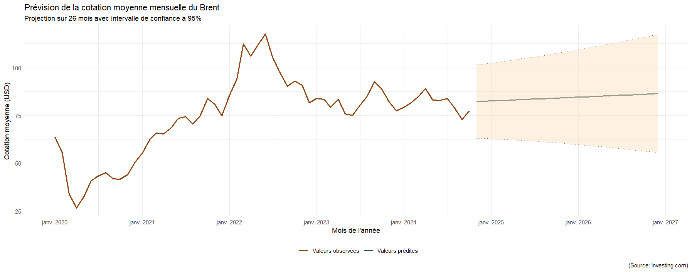

À propos
Ce projet, réalisé au sein du BUT Science des Données, consistait à étudier l’évolution des cotations de plusieurs matières premières (café, cacao, jus d’orange, sucre, pétrole Brent). L’enjeu majeur était de transformer des données brutes issues de fichiers PDF en modèles statistiques prédictifs exploitables.
Organisation du travail
Le projet a été mené en groupe de quatre personnes, avec un suivi hebdomadaire rigoureux. Nous avons utilisé des outils de pointe pour l'extraction de données (tabulapdf) et la manipulation statistique (tidyverse). Ce travail a été complété par une évaluation théorique individuelle sur la modélisation chronologique.
Démarche et résolution
La résolution de ce problème complexe s'est articulée autour de quatre piliers :
- Extraction & Structuration : Utilisation de
tabulapdfpour récupérer les données historiques depuis Investing.com et création d'une base de données propre avec 5 variables clés. - Analyse Exploratoire : Réalisation de visualisations avancées (boxplots annuels, moyennes mensuelles) pour détecter les tendances de fond.
- Modélisation : Analyse des relations entre séries (ex: cacao vs café) et mise en place d'une régression linéaire par morceaux pour le pétrole Brent.
- Prévision : Génération de prévisions sur 26 mois incluant les intervalles de confiance pour anticiper les fluctuations du marché.
Acquis personnels
Expertise Technique
Maîtrise de la bibliothèque ggplot2 pour les séries chronologiques, manipulation de formats complexes (PDF vers R) et modélisation statistique avancée (R², p-value).
Analyse de Marché
Capacité à identifier des ruptures de tendance et des composantes saisonnières dans des environnements économiques volatils.
Détails des analyses graphiques
Variabilité annuelle (Boxplots)
Ce graphique permet d'observer la dispersion des prix par année. On note une explosion des cours du cacao et du jus d'orange en 2024, liée à l'augmentation du coût des intrants (pesticides, engrais).

Diagramme des saisonnalités
L'analyse mensuelle du pétrole Brent montre l'absence d'une composante saisonnière marquée, indiquant que les prix sont davantage régis par des facteurs géopolitiques que par des cycles calendaires.

Modélisation et Prévision
La régression par morceaux appliquée au Brent permet de modéliser les changements de régime économique. Le graphique inclut une prévision sur
